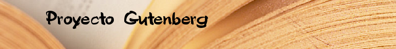

Inicio
Buscar Libro
Corregir Pagina
Desconexión
Titulo:
El Señor de los Anillos: Las dos torres
Autor:
J.R.R. Tolkien
Pagina:
3
Texto
-Pero hay que darse prisa -dijo Gimli-. El no hubiese querido que nos retrasáramos. Tenemos que seguir a los orcos, si hay esperanza de que alguno de la Compañía sea un prisionero vivo. -Pero no sabemos si el Portador del Anillo está con ellos o no -dijo Aragorn-. ¿Vamos a abandonarlo? ¿No tendríamos que buscarlo primero? ¡La elección que se nos presenta ahora es de veras funesta! -Pues bien, hagamos ante todo lo que es ineludible -dijo Legolas-. No tenemos ni tiempo ni herramientas para dar sepultura adecuada a nuestro amigo. Podemos cubrirlo con piedras. -La tarea será pesada y larga; las piedras que podrían servirnos están casi a orillas del río. -Entonces pongámoslo en una barca con las armas de él y las armas de los enemigos vencidos -dijo Aragorn -. Lo enviaremos a los Saltos de Rauros y lo dejaremos en manos del Anduin. El Río de Gondor cuidará al menos de que ninguna criatura maligna deshonre los huesos de Boromir. Buscaron de prisa entre los cuerpos de los orcos, juntando en un montón las espadas y los yelmos y escudos hendidos. -¡Mirad! -exclamó Aragorn-. ¡Hay señales aquí! -De la pila de armas siniestras recogió dos puñales de lámina en forma de hoja, damasquinados de oro y rojo; y buscando un poco más encontró también las vainas, negras, adornadas con pequeñas gemas rojas. ¡Estas no son herramientas de orcos! -dijo-. Las llevaban los hobbits. No hay duda de que fueron despojados por los orcos, pero que tuvieron miedo de conservar los puñales, conociéndolos en lo que eran: obra de Oesternesse, cargados de sortilegios para desgracia de Mordor. Bien, aunque estén todavía vivos, nuestros amigos no tienen armas. Tomaré éstas, esperando contra toda esperanza que un día pueda devolvérselas. -Y yo -dijo Legolas- tomaré las flechas que encuentre, pues mi carcaj está vacío. Buscó en la pila y en el suelo de alrededor y encontró no pocas intactas, más largas que las flechas comunes entre los orcos. Las examinó de cerca. Y Aragorn, mirando los muertos, dijo: -Hay aquí muchos cadáveres que no son de gente de Mordor. Algunos vienen del Norte, de las Montañas Nubladas, si algo sé de orcos y sus congéneres. Y aquí hay otros que nunca he visto. ¡El atavío no es propio de los orcos! Había cuatro soldados más corpulentos que los orcos, morenos, de ojos oblicuos, piernas gruesas y manos grandes. Estaban armados con espadas cortas de hoja ancha y no con las cimitarras curvas habituales en los orcos, y tenían arcos de tejo, parecidos en tamaño y forma a los arcos de los hombres. En los escudos llevaban un curioso emblema: una manita blanca en el centro de un campo negro; una S rúnica de algún metal blanco había sido montada sobre la visera de los yelmos. -Nunca vi estos signos -dijo Aragorn-. ¿Qué significan? -S representa a Sauron, por supuesto -dijo Gimli. -¡No! -exclamó Legolas-. Sauron no usa las runas élficas. -Nunca usa además su verdadero nombre y no permite que lo escriban o lo pronuncien -dijo Aragorn-. Y tampoco usa el blanco. El signo de los orcos de
Contacta con nosotros
|
Condiciones de uso
|
¿Quiénes somos?
©2011 Proyecto Gutenberg